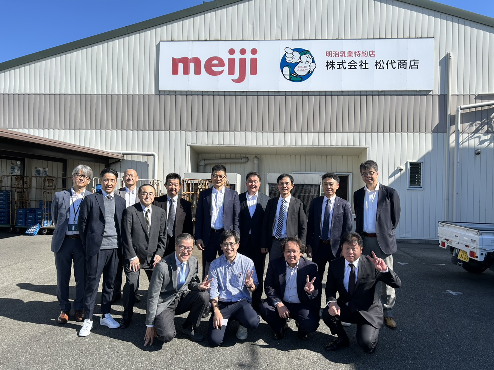

M1視察 反省会
2025年11月17日
株式会社 松代商店

📸 画像活用ガイド：
以下の画像は同一画像の異なる部分を切り出して表示しています
上段：松代 崇（代表）
中段：浅見 幸彦
下段：その他メンバー
議事録サマリー
📱 インスタグラム活動の速さ
キーポイント：
ネ岸さんがM1視察後、1週間も経たないうちにインスタを積極的に更新開始
1人カラオケの動画などを既に2本以上投稿
自ら登場して積極的に発信
自発的な活動が早い段階で始まっている
💻 プラスコードとChatGPT活用
松本さん：
プラスコードを自分で作成し、ChatGPTを業務に活用開始
メンバーが3万円の有料版に加入している模様
松代さんは「もったいない」と指摘
使い道がなくなってきた段階に達している
🎪 埼玉のイベント状況
好調：
産業祭など土日のイベントが集中し、好調な数字を記録
10月、11月はイベントで数字が稼げている
特に吉野さんの「マルシェワゴン」が話題
キャンプ用カートを改造した販促ツール
下にサンプル・パンフレットを載せて説明
明治の要望を受けて試験的に実施
🔍 ChatGPTによる適正検査の開発
浅見さんが開発：
80問の適正検査をChatGPTで作成・検証済み
スカウターと同様の5段階評価方式
谷中さんの結果をテストし、スカウターと同様の結果を確認
配達向き・営業向き・離職リスク・やる気の4部門で判定
80問の質問で構成
🤖 AIツール活用の最前線
松代さんの提唱：
「全てを図に、HTML化して視覚化」
おすすめのAIツール：
Claude
デザインが最も綺麗
HTML出力に最適
DeepSeek
中国製だが高性能
無料版でも十分
Kimi (K2シンキング)
中国製最新AI
話題性高い
ChatGPT
デザイン系はやや弱い
テキスト処理は強力
活用方法：
録音データを文字起こし→AIに「図でHTMLで作成」と指示→URL生成で共有
👥 人材採用の課題
共通の悩み：
営業職の採用がうまくいかない
どの店舗も営業が集まらない
浅見さん：1000-1200件のアポでも改善策模索中
松代さん：スカウター結果が悪いため面接を中止したケースも
仕組み自体を変える必要があるとの認識
📅 今後の予定
M1開催：
次回は年明け1月19日（金）を提案
12月はイベントや忘年会で忙しいため見送り
専務さんの来訪も予定されている
東京での5スター会議も控えている
松代さんは広島での明治関連イベント参加で都合が悪い
💡 今回の主な学びと実践
✓ インスタ活動の重要性と即座性
✓ ChatGPTを活用した適正検査の実用化
✓ マルシェワゴンなどのイベント販促ツールの有効性
✓ 情報をHTML・図解化して視覚的に共有する方法
✓ 採用難を打破するための仕組み改革の必要性